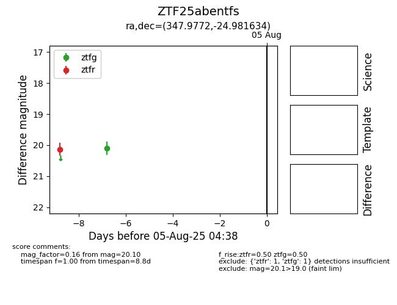

Target ZTF25abentfs at 2025-08-05 04:38, see:
FINK: fink-portal.org/ZTF25abentfs
Lasair: lasair-ztf.lsst.ac.uk/objects/ZTF25abentfs
ALeRCE: alerce.online/object/ZTF25abentfs
alt names
ZTF25abentfs (ztf,fink)
coordinates:
equatorial (ra, dec) = (347.9772,-24.98163)
galactic (l, b) = (32.7952,-67.58005)
photometry
last ztfg=20.10, ztfr=20.13
1 ztfg, 1 ztfr detections
